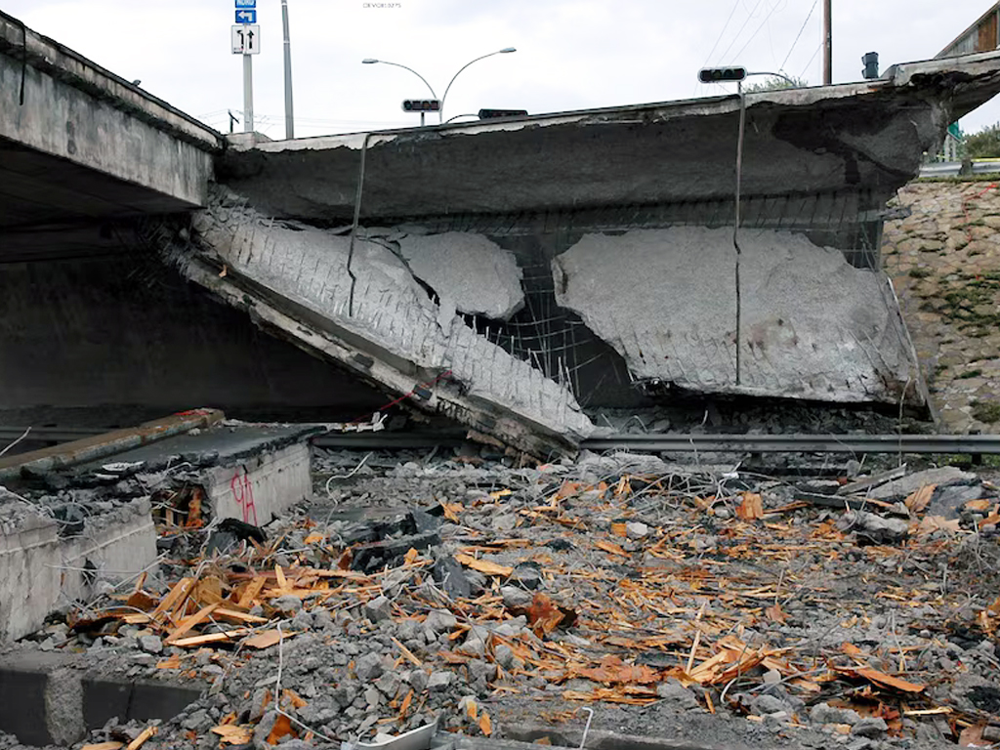
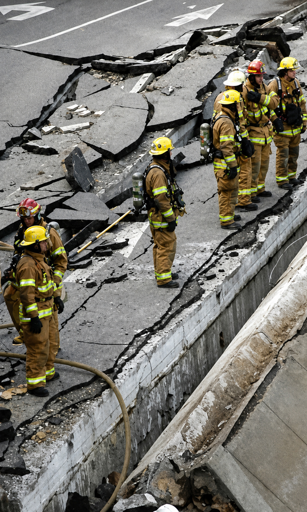
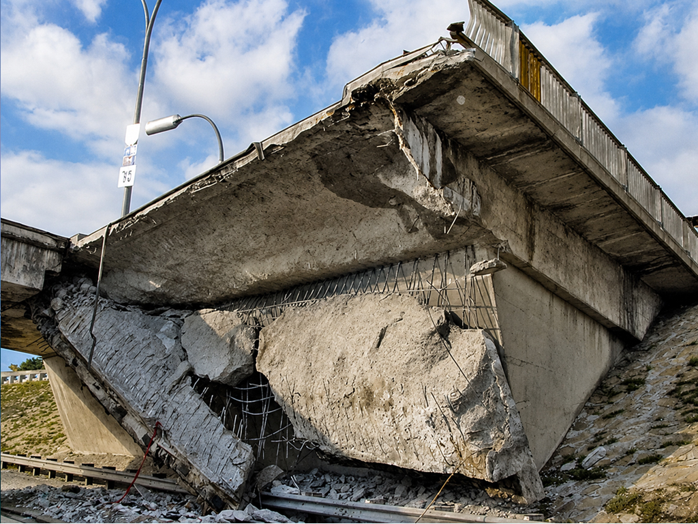
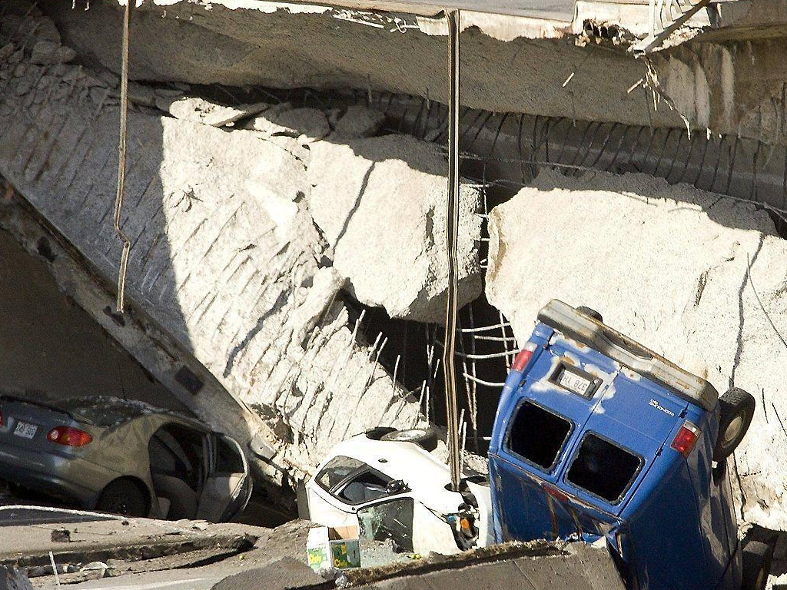
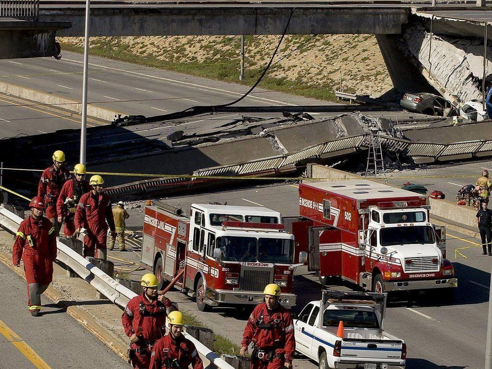
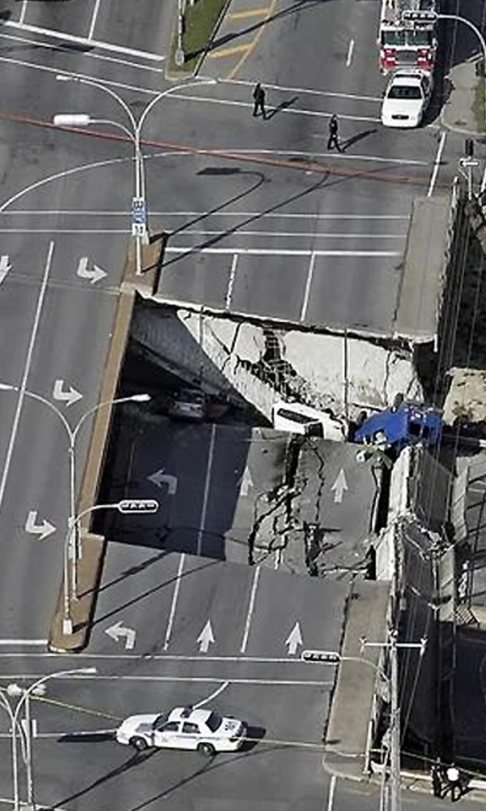
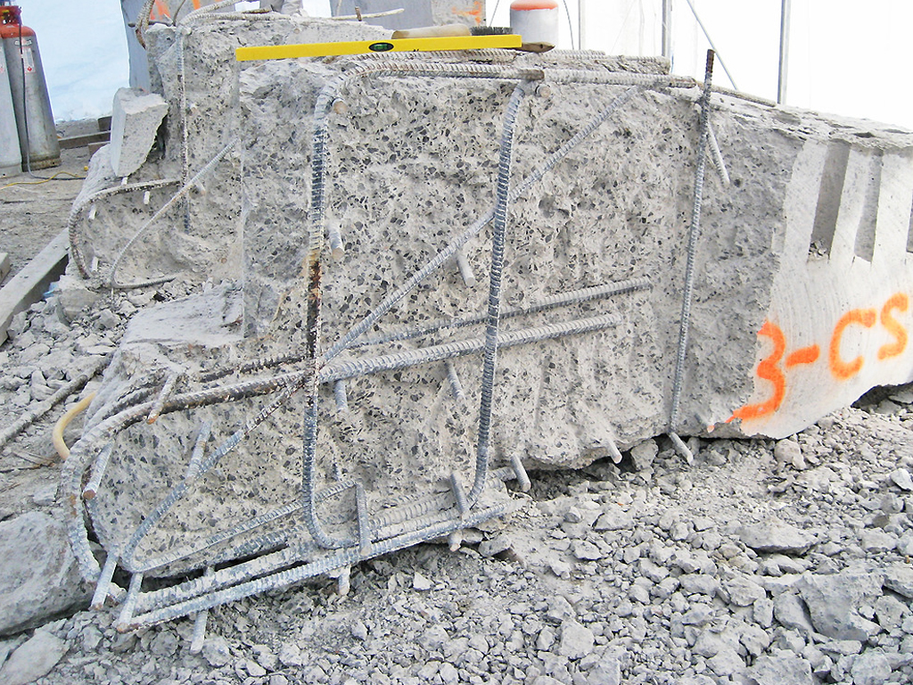

THE 2006 DE LA CONCORDE OVERPASS COLLAPSE
On 30 September 2006, at approximately 12:30, a 20-metre section of the east lane of the De la Concorde overpass in Quebec, suddenly collapsed onto Autoroute 19 below.
Two vehicles travelling beneath the overpass were crushed, killing five people. A further six people were seriously injured when their vehicles travelled over the exposed edge of the collapsed structure.
The northbound portion of the overpass remained standing, while Autoroute 19 was closed for almost four weeks following the disaster.
Although the collapse occurred suddenly, the subsequent investigation found that it was not the result of one isolated defect or event.
Instead, it represented the final stage of a long-term process involving weaknesses in the original design.


Background and Structural Design
The De la Concorde overpass was completed in 1970 and was considered a relatively young and modern structure.
It had originally been designed for an expected service life of 70 years, meaning that it failed after only around half of its intended lifespan.
The overpass incorporated a relatively slender reinforced-concrete superstructure. Its central span consisted of box girders supported on beam seats located at the ends of large cantilevered sections of the abutments. These beam seats extended across the width of the bridge and were positioned directly beneath the expansion joints.
This arrangement created a particularly vulnerable structural zone. The ends of the cantilevers were responsible for transferring significant loads from the central span into the abutments, while the expansion joints above them were exposed to water, road debris and de-icing salts. If the joints became damaged or leaked, contaminated water could accumulate around the supporting concrete and reinforcement.
Another important weakness was the difficulty of inspecting these regions. The beam seats were located in areas that could not be properly examined without lifting parts of the bridge deck.
Warning Signs Before the Collapse
Several warning signs appeared before the failure. In the months before the collapse, nearby residents reported debris falling from the overpass.
About an hour before the collapse, fragments around 15 cm by 36 cm were found near the structure. Transport Quebec workers removed them, but the bridge stayed open. A Transport Department patroller then carried out a visual and auditory inspection and found no obvious instability. Shortly afterwards, the southbound section collapsed.
This showed a major weakness in routine inspection: serious internal damage can be difficult to detect when critical areas are inaccessible.

Technical Failure Mechanism
The main failure occurred in the south-east cantilever. Investigators identified a shear failure in the thick reinforced-concrete slab supporting the box girders.
Concrete beneath the upper reinforcement had deteriorated through moisture, de-icing salts and repeated freeze-thaw cycles, especially near the beam seat. A crack formed in this weakened area and spread through the slab until it became a critical shear plane that could no longer carry the load.
When the remaining concrete failed, the cantilever lost support and around 20 metres of the overpass fell onto the motorway. Although the collapse was sudden, the Commission found that the deterioration had developed over many years.

“Although the collapse was sudden, the Commission found that the deterioration had developed over many years.”
Design and Construction Defects
Design and construction weaknesses increased the bridge's vulnerability. Reinforcing steel was concentrated on one horizontal plane near the top of the abutment, creating a plane of weakness.
The anchorage of the main No. 14 bars was also inadequate. Under modern practice, No. 8 U-shaped hanger bars would hook around them to improve anchorage and control cracking. Some hangers and diagonal bars were also installed incorrectly, reducing resistance to shear.
The concrete was porous and poorly suited to repeated freeze-thaw exposure with de-icing salts. The slab also lacked modern shear reinforcement. Investigators believed proper reinforcement could have limited crack growth and possibly prevented collapse, or at least produced more visible warning deformation.
Environmental Deterioration
Environmental exposure worsened these weaknesses. Damaged expansion joints allowed salty water to reach the beam-seat concrete, while Quebec's freeze-thaw cycles gradually weakened the material and helped the critical shear crack develop.
The lack of waterproofing made this worse. During the 1992 repairs, no waterproofing membrane was installed over the slab, leaving it exposed to moisture and salts. Investigators concluded that this accelerated the deterioration.
By 2006, large areas of the cantilever slab were severely damaged, despite waterproof membranes being included in Quebec Ministry of Transportation specifications since 1978.
Maintenance and Inspection Failures
Inspection and management problems also contributed. The beam seats beneath the expansion joints were difficult to inspect without lifting the bridge deck, allowing deterioration to remain hidden.
The Commission also identified incomplete documentation, poor communication, missed opportunities to assess the bridge, and inspection procedures that did not fully account for its unusual design.
The debris found shortly before the collapse showed these limits. Staff responded, but the inspection did not reveal the extent of the internal damage, so the bridge remained open.

The 1992 Repair Works
The 1992 repairs were a major missed opportunity. Workers found much more damaged concrete than expected, exposing U-shaped hangers and the main No. 14 bars over a significant length.
Most experts later believed the work likely accelerated an existing critical crack. The damage should also have led to a detailed structural assessment and temporary shoring of the cantilevers.
No waterproof membrane was added, so the area remained exposed to moisture and de-icing salts. A wider investigation at this stage might have identified the problem years earlier.


Lessons for Engineering Practice
The De la Concorde collapse highlights several lessons for reinforced-concrete infrastructure.
Structural redundancy and ductility are important so that one local defect does not cause immediate catastrophic failure. Adequate shear reinforcement can control cracking and provide visible warning before collapse.
Inspectability should be considered during design. Critical load-transfer areas must remain accessible throughout a bridge's life so serious deterioration can be detected.
Waterproofing and drainage are essential for durability. Moisture, salts and freeze-thaw cycles can severely damage reinforced concrete, so protection from water should be treated as a structural requirement.
Construction quality control also matters. Reinforcement must be correctly designed and installed, since poor positioning can reduce a member's ability to resist loads.
Finally, accurate documentation, communication and response to warning signs are essential. Poor records, design differences and missed warning signs can stop engineers from recognising a developing failure.
defects around critical joints should trigger investigation proportionate to the possible structural consequences.
“The De la Concorde collapse therefore illustrates how catastrophic structural failures rarely arise from a single cause.”
Conclusion
The De la Concorde collapse therefore illustrates how catastrophic structural failures rarely arise from a single cause. In this case, weaknesses introduced during design and construction interacted with poor concrete durability, environmental exposure, inadequate waterproofing, difficult inspection conditions and missed opportunities for intervention. Over several decades, these factors allowed a critical shear crack to develop until the south-east cantilever could no longer carry the forces acting upon it.
The most important engineering lesson from the disaster is therefore not simply that one component was incorrectly designed or constructed. It is that structural safety depends on the entire life cycle of a structure: good design, accurate construction, durable materials, effective drainage and waterproofing, accessible